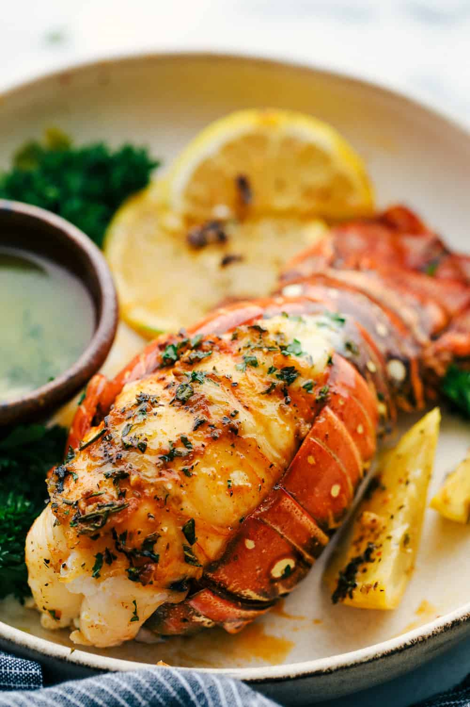

Home
Lobster Tail Recipe

This lobster tail recipe is a decadent dinner made with large lobster
tails smothered with a buttery garlic herb sauce then broiled under high
heat making these lobster tails tender and juicy. The ultimate indulgence!
Instructions
-
Preheat the oven to broil or 500 degrees. Start by preparing the
lobster. Using kitchen shears butterfly the tail by cutting down the
center. Loosen the meat and pull the lobster meat upward. Salt and
pepper the meat and set on a baking sheet.
-
In a small bowl whisk together the melted butter, garlic, paprika,
thyme, rosemary, and parsley. Spread evenly on each lobster tail.
-
Broil the lobster tails for about 8-10 minutes or until the meat is
opaque and lightly brown on the top. Serve with melted butter if
desired.